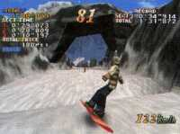

|

Review

Game Type: 3D Racing
Unlike Ski or Die, which had a heavy stunt element, Cool
Boarders places far more emphasis on racing. You race your snowboard
against the clock or a ghost of your previous best run down courses
littered with trees, cliffs, and rocks. There are a few simple stunts
you can pull along the way that are figured into your final score.
Gameplay: 50/100
Maybe the movement of your snowboard is highly realistic; I
wouldn't know because my board has largely sat in the garage
over the years. I do know that it's doesn't aid the gameplay in
the least. The inertia in this game is unbelievable. You can see
the cliff wall coming, you can react to it, you can pound the drift
(quick turn) button for all you're worth, but a couple seconds later
you're likely to fall over the edge anyway. Highly frustrating. If
you're faced the wrong way you can actually start sliding UPhill
in your efforts to turn around. You can jump several feet over rocks
in the course and you'll hit the thin air above them. You can jump
over ravines, stop in midair, and plummet. The game had potential
but it's ruined by factors like these.
Graphics: 50/100
Seams in the polygons are glaringly visible. At least the popup
is minimal. The scenery is all right but not nearly as interesting
as Ridge Racer's, and with only 3 courses you can get bored with
it quickly. The rendered intro is among the worst I've seen
on the Playstation.
Sound: 70/100
The tunes are decent, mostly mild rock, and there's a good
selection of them. The announcer's voice is pretty good but when the
samples are repeated as much as they are here anything can get
annoying. The voice can be turned off but without it there's not
much to hear aside from the music.
Overall: 50/100
If you're desperate for a snowboard game you might want to give
it a rent when it's released stateside, but you may be disappointed
at the small number of stunts. This is first and foremost a
racing game and if you consider Ridge Racer and Wipeout to be its
competition it's utterly blown away. Although everything's in English
it's definitely not worth importing, especially since its U.S. release
is in the very near future.
|